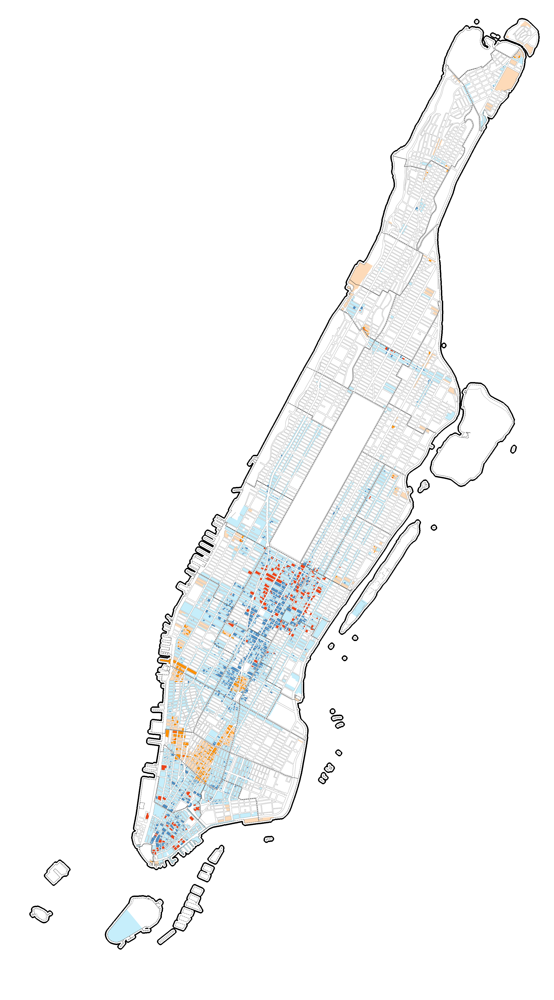

Potentially Convertible
Commercial Buildings by
Neighborhood (Top 10)
Potentially Convertible
Commercial Building Square Footage by
Neighborhood (Top 10)
Pre-1961
1961–1990
Pre-1961
1961–1990
Midtown-Times Square427
Midtown South-Flatiron-Union Square356
SoHo-Little Italy-Hudson Square194
Tribeca-Civic Center117
Financial District-Battery Park City111
Chelsea-Hudson Yards102
East Midtown-Turtle Bay88
Chinatown-Two Bridges78
Greenwich Village77
Murray Hill-Kips Bay56
Midtown-Times Square115,455,302
Midtown South-Flatiron-Union Square43,999,952
Financial District-Battery Park City39,776,417
East Midtown-Turtle Bay30,483,563
Tribeca-Civic Center21,632,034
SoHo-Little Italy-Hudson Square13,496,570
Chelsea-Hudson Yards13,197,771
Murray Hill-Kips Bay9,934,661
Greenwich Village5,233,271
Hell's Kitchen4,517,130
Hover over the map to zoom in
Next →
Potentially Convertible Commercial Buildings in Manhattan Map Legend
Original Zoning districts allowing Conversion
Additional Zoning districts, eligible for conversion since the passing of City of Yes, December 2024
No general residential conversion pathway
Pre-1961 office buildings in Original Zoning districts allowing Conversion
1961–1990 office buildings in Original Zoning districts, eligible for conversion since the passing of City of Yes, December 2024
Pre-1961 office buildings in Additional Zoning districts, eligible for conversion since the passing of City of Yes, December 2024
1961–1990 office buildings in Additional Zoning districts, eligible for conversion since the passing of City of Yes, December 2024
Manhattan neighborhood (NTA) boundary